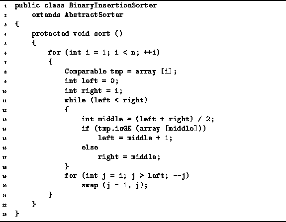
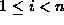
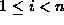
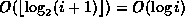
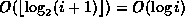
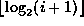
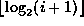
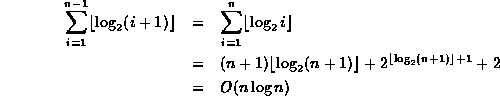

Data Structures and Algorithms
with Object-Oriented Design Patterns in Java
Data Structures and Algorithms
with Object-Oriented Design Patterns in Java
The straight insertion algorithm presented in the preceding section
does a linear search to find the position in which to do the insertion.
However, since the element is inserted into a sequence that is already sorted,
we can use a binary search instead of a linear search.
Whereas a linear search requires O(n) comparisons in the worst case,
a binary search only requires  comparisons.
Therefore, if the cost of a comparison is significant,
the binary search may be preferred.
comparisons.
Therefore, if the cost of a comparison is significant,
the binary search may be preferred.
Program  defines
the BinaryInsertionSorter class.
The BinaryInsertionSorter class extends the
AbstractSorter class defined in Program .
The framework of the sort method
is essentially the same as that of
the StraightInsertionSorter class.
defines
the BinaryInsertionSorter class.
The BinaryInsertionSorter class extends the
AbstractSorter class defined in Program .
The framework of the sort method
is essentially the same as that of
the StraightInsertionSorter class.

Program: BinaryInsertionSorter class sort method.
Exactly, n-1 iterations of the outer loop are done (lines 6-21).
In each iteration, a binary search search is done to determine
the position at which to do the insertion (lines 8-18).
In the  iteration of the outer loop,
the binary search considers array positions 0 to i (for ).
The running time for the binary search in the
iteration of the outer loop,
the binary search considers array positions 0 to i (for ).
The running time for the binary search in the  iteration is .
Once the correct position is found,
at most i swaps are needed to insert the element in its place.
iteration is .
Once the correct position is found,
at most i swaps are needed to insert the element in its place.
The worst-case running time of the binary insertion sort
is dominated by the i swaps needed to do the insertion.
Therefore, the worst-case running time is  .
Furthermore, since the algorithm only swaps adjacent array elements,
the average running time is also
.
Furthermore, since the algorithm only swaps adjacent array elements,
the average running time is also  (see Section ).
Asymptotically, the binary insertion sort is no better than straight insertion.
(see Section ).
Asymptotically, the binary insertion sort is no better than straight insertion.
However, the binary insertion sort does
fewer array element comparisons than insertion sort.
In the  iteration of the outer loop,
the binary search requires  comparisons,
for .
Therefore, the total number of comparisons is
iteration of the outer loop,
the binary search requires  comparisons,
for .
Therefore, the total number of comparisons is

(This result follows directly from Theorem ).
The number of comparisons required by
the straight insertion sort is  in the worst case
as well as on average.
Therefore on average, the binary insertion sort
uses fewer comparisons than straight insertion sort.
On the other hand, the previous section shows that in the best case
the running time for straight insertion is O(n).
Since the binary insertion sort method always does the binary search,
its best case running time is
in the worst case
as well as on average.
Therefore on average, the binary insertion sort
uses fewer comparisons than straight insertion sort.
On the other hand, the previous section shows that in the best case
the running time for straight insertion is O(n).
Since the binary insertion sort method always does the binary search,
its best case running time is  .
Table summarizes the asymptotic running times
for the two insertion sorts.
.
Table summarizes the asymptotic running times
for the two insertion sorts.
| running time | |||
|
algorithm | best case | average case | worst case |
| straight insertion sort | O(n) | | |
| binary insertion sort | | | |
 Copyright © 1998 by Bruno R. Preiss, P.Eng. All rights reserved.
Copyright © 1998 by Bruno R. Preiss, P.Eng. All rights reserved.